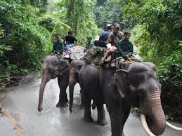

Manas National Park

Manas National Park or Manas Wildlife Sanctuary is a national park, UNESCO Natural World Heritage site, a Project Tiger reserve, an elephant reserve and a biosphere reserve in Assam, India. Located in the Himalayan foothills, it is contiguous with the Royal Manas National Park in Bhutan. The park is known for its rare and endangered endemic wildlife such as the Assam roofed turtle, hispid hare, golden langur and pygmy hog. Manas is famous for its population of the wild water buffalo.

HOW TO REACH ?
Nearest Airport: Guvahati
Nearest Railway Station:Barpeta
Nearest Bus Stand: Barpeta